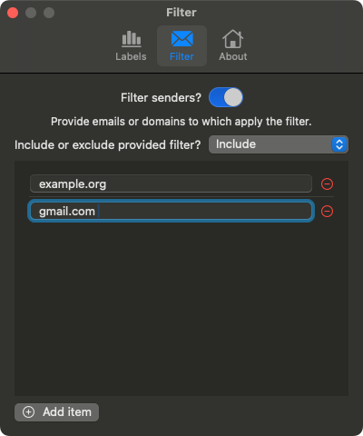

FAQ
Short answers to common questions.
Does Sentimental send my emails anywhere?
No. Analysis runs on-device. There is no cloud processing and message content does not leave your machine.

Do I need an internet connection?
No. Sentimental is designed to be offline-first and does not depend on external APIs or services.
Is the classification “black box” AI?
No. Marker logic is deterministic and intended to be explainable. Treat the indicators as decision support, not automation.
Can I change how markers look?
Yes. Marker semantics are toggleable (flag vs colour) and preferences are stored using system-native defaults.
